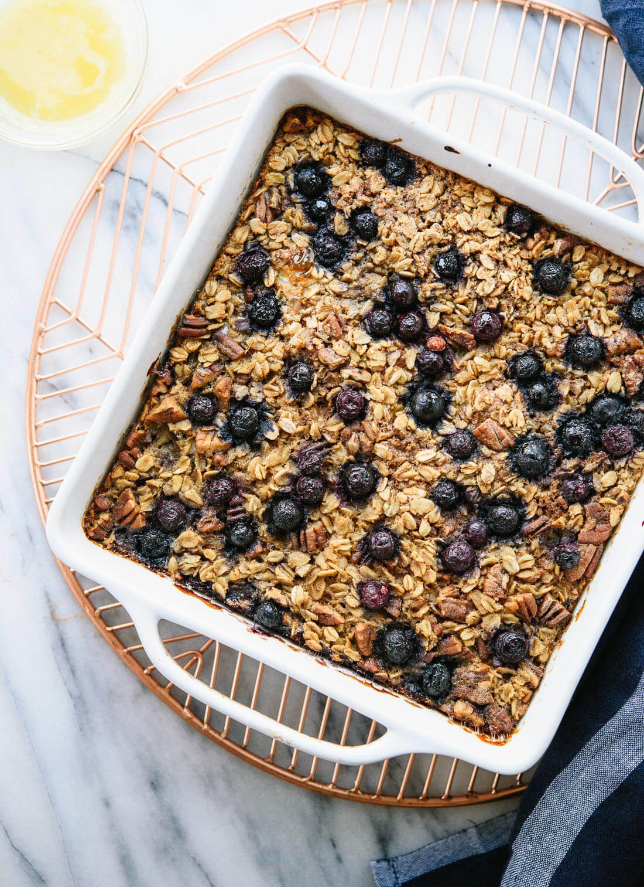

Blueberry Baked Oatmeal

Description: A pan of baked blueberry oatmeal
This baked oatmeal recipe is loaded with wholesome ingredients—oats, nuts, maple syrup and blueberries. A couple of eggs bind it all together, and a light drizzle of butter on top makes it taste like a treat.
Ingredients
- 2/3 cup roughly chopped pecans
- 2 cups old-fashioned oats
- 2 tsp ground cinnamon
- 1 tsp baking powder
- 3/4 tsp fine-grain sea salt
- 1/4 tsp ground nutmeg
- 1 3/4 cup milk of choice
- 1/3 cup maple syrup or honey
- 2 large eggs or flax eggs
- 3 tbsp melted unsalted butter
- 2 tsp vanilla extract
- 12oz frozen blueberries
- 2 tsp raw sugar (optional)